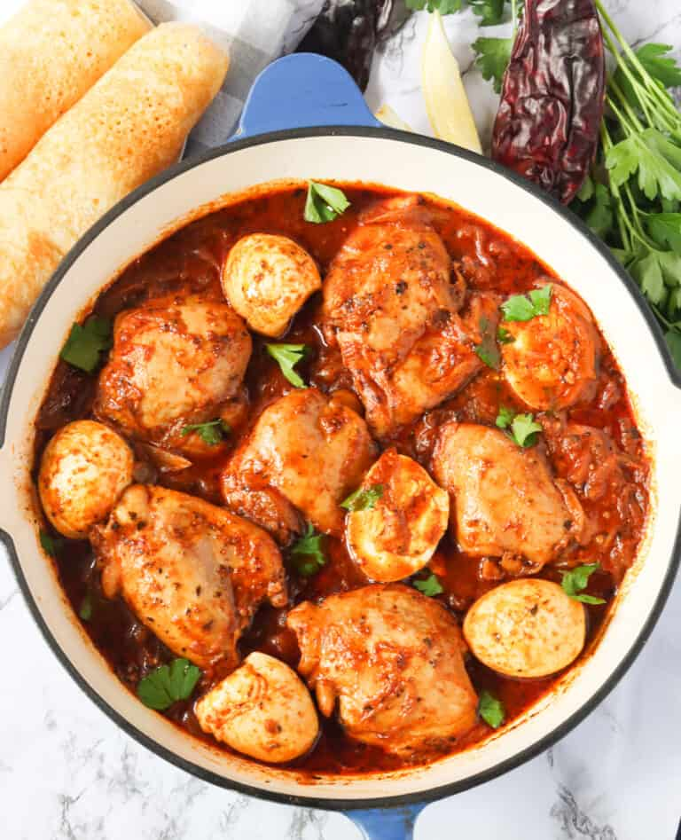

Back
Dorowat
Doro Wat Ethiopian Chicken Stew is a spicy, mouthwatering, and comforting one-pot dish slowly simmered in a blend of robust spices. This delightfully delicious chicken dinner is super easy! Pair it with injera and Ethiopian collard greens to complete your iconic Ethiopian experience.

Recipe ingredients
- Chicken
- tomato paste
- eggs
- onions
- lemon
- Paprika
- Berbere spice
- Dried Basil
- Pepper
- Salt
- Garlic
- Ginger
- Butter
- Canola oil
Let's explain what each ingredient is used for.
- Chicken – Traditionally, a whole chicken cut into 12 pieces is used in this Ethiopian dish to represent the 12 tribes of Jacob (from the Bible). But feel free to use any cut of chicken you prefer. 😉
- Aromatics – Take your time sauteing the onion, garlic, ginger, and the unique blend of spices from the Ethiopian spiced butter. This allows them to fully release their delectable savory goodness that will indeed reflect our sauce base. Yum!
- Boiled Eggs – You can’t go wrong with adding more protein. Let them simmer with the sauce for a more effective flavor absorption.
- Tomato Paste – Besides adding a rich tanginess, it also adds a lovely deep reddish hue to our spicy chicken stew.
- Seasonings – Berbere spice is the key ingredient in this recipe. It holds different flavors from a diverse blend of spices, such as cinnamon, nutmeg, fenugreek, cardamom, and cumin, giving our stew its authentic taste. I also added more paprika and basil to deepen the flavor.
- Lemon – The lemon juice somewhat gives our dish a refreshing zing and balances the fat in the spiced butter.
How to cook Dorowat
- Prep the Chicken – Season chicken with salt and pepper, and set aside.
- Saute – Heat a large pot over medium heat until hot, then add the spiced butter and onions. Sauté onions, frequently stirring, until they are deep brown – 7-10 minutes. (Photos 1-2)
- Add Berbere Spice – After the onions are caramelized or reach a deep brown color, add some more oil, followed by the berbere spice, garlic, and ginger. (Photo 3)
- Continue Stirring – Stir for about 2-3 minutes for the flavors to blossom, and the mixture has a deep rich brown color. Be careful not to let it burn. (Photo 4)
- Add Water – Then add about 2-3 cups of water. Add chicken, tomato paste, paprika, basil, and salt, and cook for about 30 minutes.
- Then Eggs – Throw in the eggs and lemon juice; thoroughly mix to ensure that the eggs are immersed in the sauce.
- Simmer – Continue cooking until chicken is tender, 10 minutes or more.
- Adjust Seasoning – Adjust sauce thickness and seasoning with water or broth, lemon, and salt according to preference.
- Serve warm.